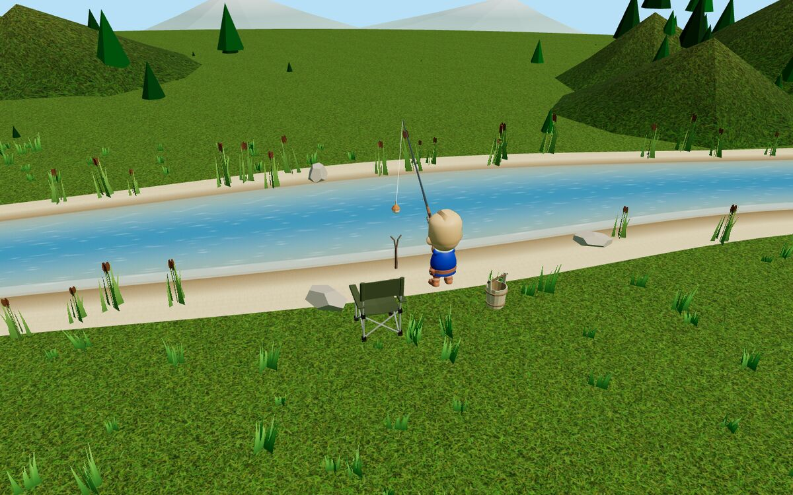
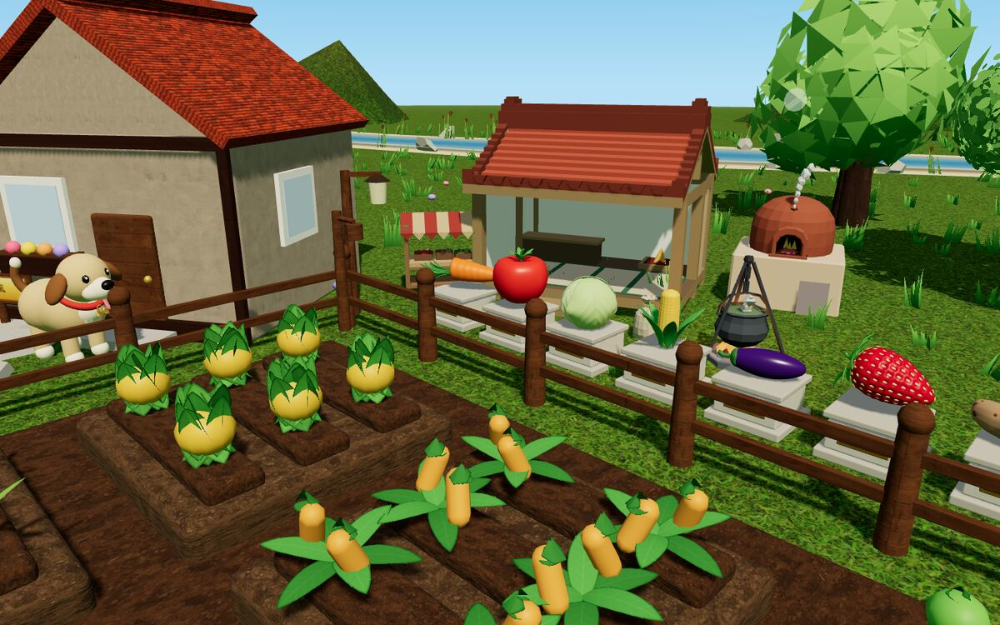

從第一天開始
從第一天開始
種下合你作息的作物
十八種作物，快的幾分鐘、慢的要兩天。白天夜晚跟著真實時間走，晚上田邊會點起油燈。

從一塊小田開始，慢慢長成整座農場。
從第一天開始
十八種作物，快的幾分鐘、慢的要兩天。白天夜晚跟著真實時間走，晚上田邊會點起油燈。
幫忙澆水除草，換點零用錢；或者趁主人不注意，摘兩顆回家。
被當場抓到的話——就留下來罰站吧。

Lv 21用作物當餌，掛著讓它自己釣，或者親自拿起竿子跟魚拔河。有的魚，一輩子可能只遇到一次。

Lv 32把收成做成料理，拿去賣、自己吃，或交給上門下訂單的客人。
農場裡還藏著一些事。每包只透露一點點，剩下的自己進去找。
有一顆豆子，種下去不會長在田裡。

它會一直往上長，長到雲上面。朋友來幫忙澆水、施肥，它就長得快一點。
至於上面住著誰——要上去才知道。記得找朋友一起。
豆子從哪裡來？那包神秘的種子，也許知道。
免費，也沒有廣告。之後可能會新增一些無傷大雅的收費項目，畢竟伺服器的運作需要經費。
不用。手機或電腦的瀏覽器打開網址就能玩；想放在手機桌面，可以用瀏覽器的「加入主畫面」。
可以，自己種田、釣魚、煮菜、養狗、打扮小人都很完整。不過有朋友會熱鬧很多——互相幫忙，也互相提防；有些地方，也是一群人去比較好玩。
不會，每塊田能被拿走的有限，養隻小狗看家也有幫助。不過成熟太久沒收會壞掉，有空還是常回來看看；溪邊的釣竿倒是不用顧，離線也會照樣釣。
遊戲會自動認出手機，降低畫面解析度和更新頻率；一段時間沒操作會再更省一點。